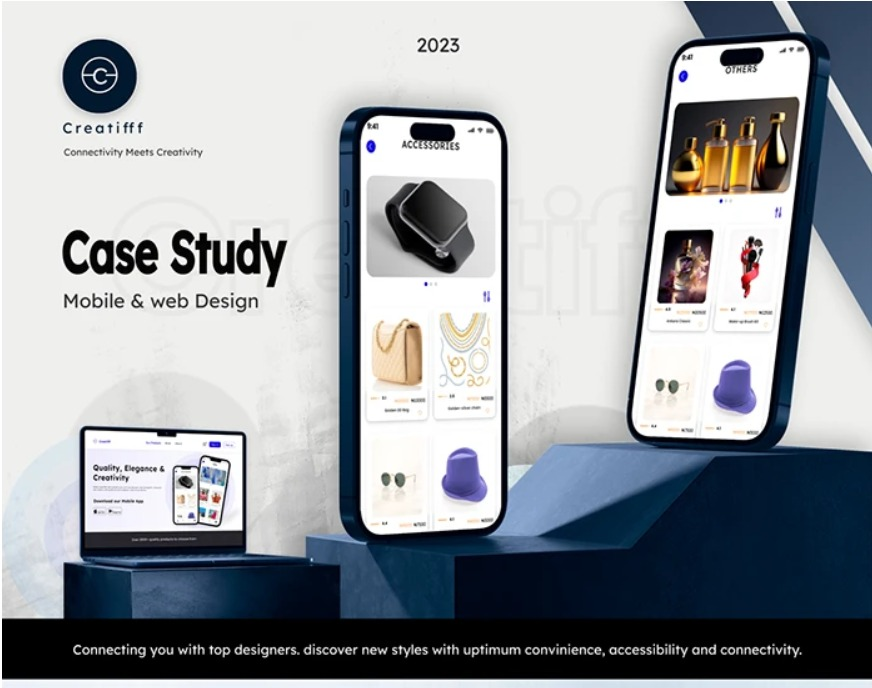
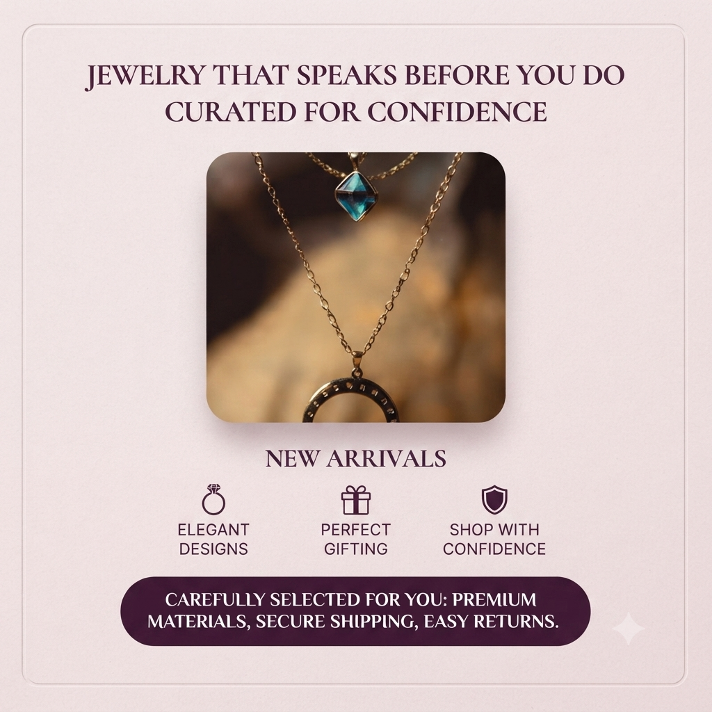
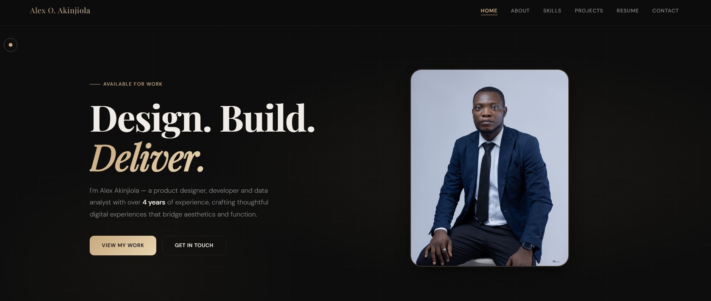
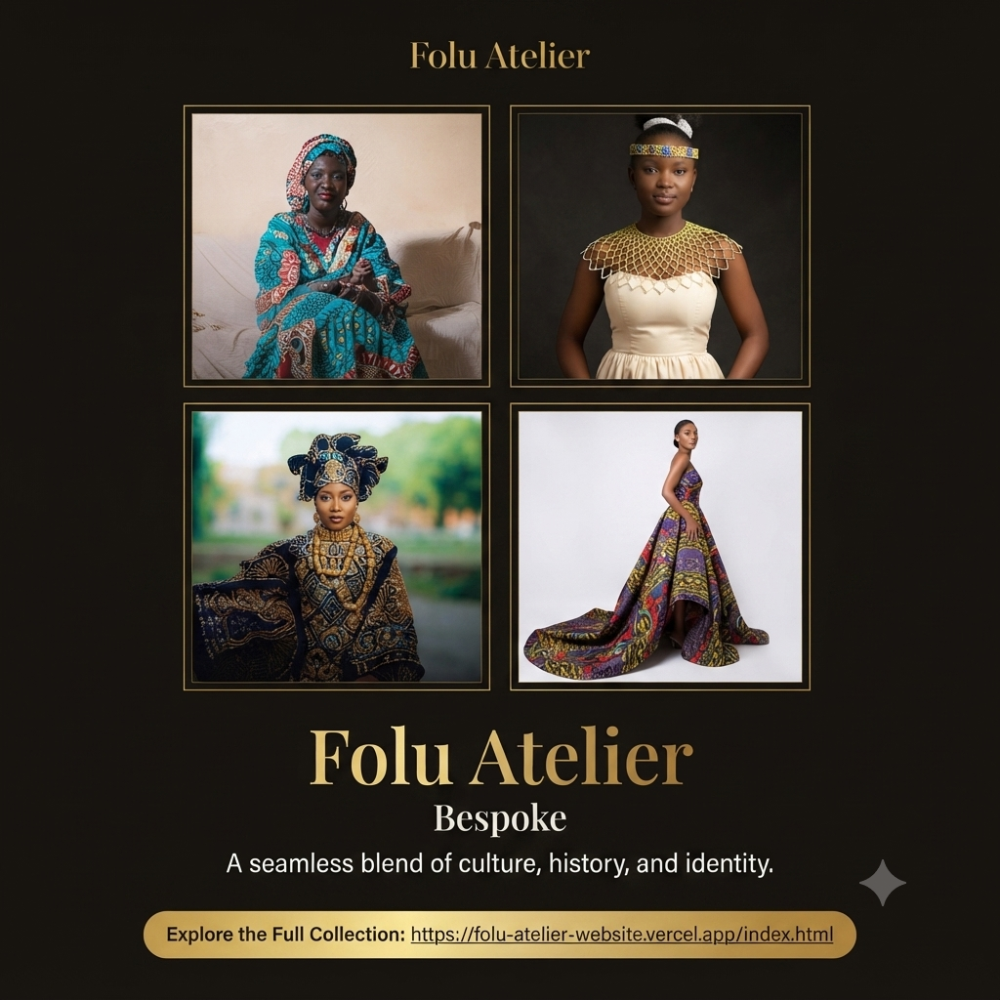

More products.
More problems solved.
Every project here required a different approach. Different users, different constraints, different definitions of success.

Mealflex — Simplifying food discovery and ordering.
Redesigned the end-to-end food ordering experience — from browse to checkout — reducing unnecessary decision points and improving order completion rates through clearer information hierarchy.

Creatifff — Fashion e-commerce with a 75% satisfaction lift.
Led end-to-end product design for a mobile-first fashion platform. Redesigned onboarding and checkout flows, built the full design system, and worked with engineering through implementation. Resulted in a 15% measurable increase in user satisfaction.

Ledger Studio — Polished invoicing without complexity.
Designed and built a luxury invoice generator as a no-backend, client-side product. Demonstrates what happens when design thinking goes all the way through to working code — not just a Figma file.

AnnySHub — Designing both sides of a retail experience.
Designed a retail showroom across both the customer-facing experience and the admin interface — two very different users, one product. Required careful role-based UX thinking and a design system that served both without contradiction.

Portfolio Website — Oluwakemi
A quiet-luxury editorial portfolio site for a virtual assistant, built front-to-back with a full animation layer

Portfolio Website — Alex
My own portfolio — a no-backend, fully responsive multi-page site presenting my design and frontend work.

Folu Atelier — Luxury Brand
Folu Atelier is a luxury fashion brand that I helped design and develop a comprehensive digital presence for. A luxury brand site with a two-part architecture — a customer-facing House and an owner-facing Studio.

SPIN & WIN Giveaway
This promotional campaign is designed to reward members of our community through a fun and interactive experience. Winners will redeem their prizes through our verified support channel.